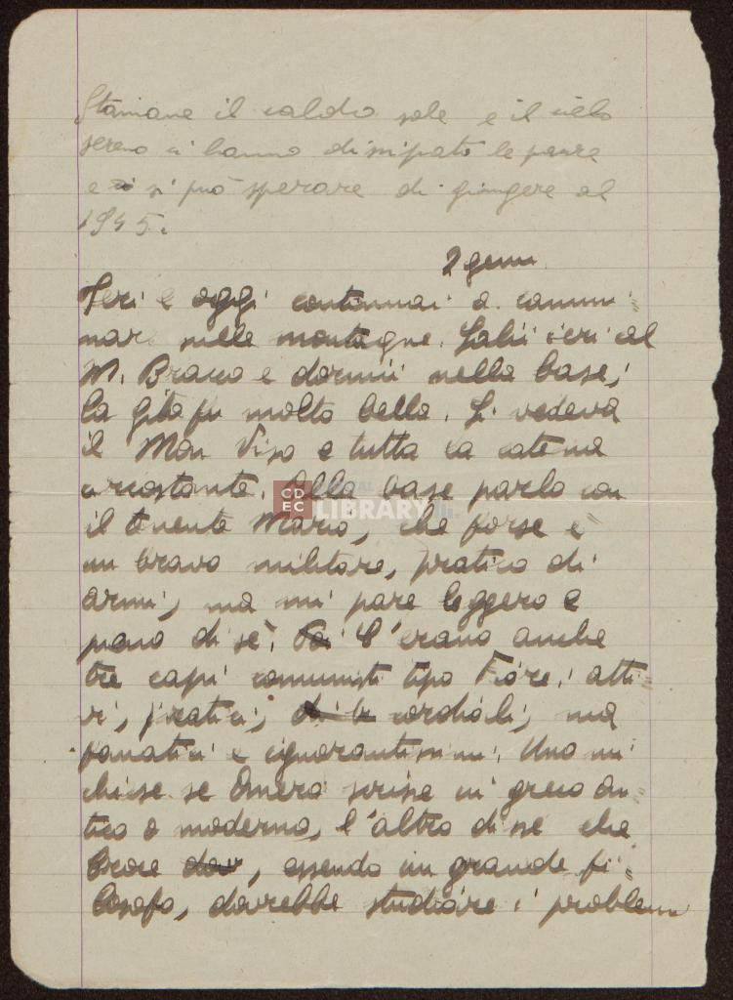
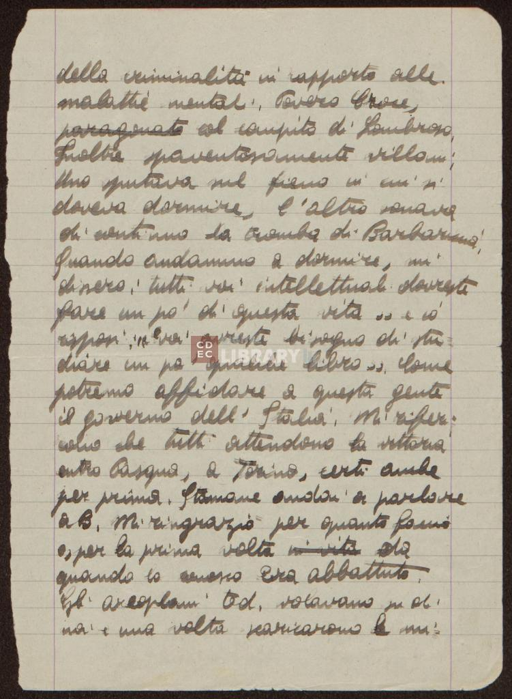
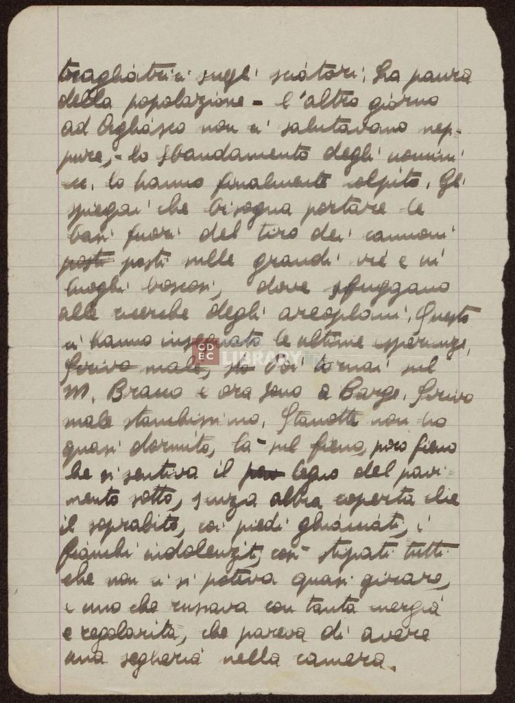

Diari di Emanuele Artom
Informazioni sull'edizione dell'opera
Edizione digitale
Progetto a cura di: Francesca Ravani
Progetto realizzato sotto la guida di: Angelo Mario Del Grosso
Emanuele Artom
Emanuele Artom nacque ad Aosta nel 1915 in una colta famiglia della borghesia ebraica
torinese. Fu un partigiano e storico italiano di origine ebraica, combattente della
Resistenza.
Cominciò ad avvicinarsi all'antifascismo verso la fine degli anni Trenta, aderendo
al Partito d'Azione nel 1943. All'indomani dell'8 settmebre
si unì ai partigiani con un nome di copertura: Eugenio Ansaldi. Nel 1944 i tedeschi
cominciarono il grande rastrellamento contro i partigiani e
il 25 marzo Emanuele venne catturato. Scoperto essere ebreo fu torturato e subì indicibili
sevizie. Il 31 marzo fu trasferito alle Carceri Nuove di
Torino e una settimana dopo morì a seguito delle torture subite.
Informazioni sulla pubblicazione
L'edizione digitale dell'opera è consultabile presso Università degli studi di Pisa.
Anno 2023
Informazioni sulla storia
I diari sono composti da due parti: la prima parte racconta la vita culturale di
Torino e la persecuzione razziale, la seconda parte riguarda l'esperienza partigiana
di Emanuele Artom.
I diari vennero scritti da Emanuele Artom e comprendono un periodo compreso tra
il 1940 e il 1943.
Le pagine del manoscritto sono state donate alla Fondazione CDEC su espressa volontà
della madre Amalia Segre Artom.
Informazioni sul materiale
Le pagine del manoscritto sono scritte in corsivo e sono quasi tutte totalmente leggibili;
in alcuni punti sono presenti cancellature,
sbavature o segni incomprensibili. Alcune delle pagine sono danneggiate il che può
rendere complicata la trascrizione.
Il manoscritto è composto da 174 fogli di carta .
Sono scritti in italiano .
LEGENDA
Persone: rosso
Luoghi: viola
Unclear: sottolineatura verde
Espansione di un'abbreviazione: sottolineatura wavy
Correzione di una parola: sottolineatura double

1 -
Stamane il caldo sole e il cielo
2 -
sereno ci hanno dissipato le paure
3 -
e si può sperare di giungere al
4 -
1945.
5 -
2 genn. gennaio
6 -
Ieri e oggi continuai a cammi=
7 -
nare sulle montagne. Salii ieri al
8 -
M. Bracco e dormii nella base;
9 -
la gita fu molto bella. Si vedeva
10 -
il Mon Viso Monviso e tutta la catena
11 -
circostante. Alla base parlo con
12 -
il tenente Mario, che forse è
13 -
un bravo militare, pratico di
14 -
armi, ma mi pare leggero e
15 -
pieno di sè. C'erano anche
16 -
tre capi comunisti tipo Fiore: atti=
17 -
vi, pratici; cordiali, ma
18 -
fanatici e ignorantissimi. Uno mi
19 -
chiese se Omero scrisse in greco an=
20 -
tico o moderno, l'altro disse che
21 -
Croce, essendo un grande fi=
22 -
losofo, dovrebbe studiare i problemi

1 -
della criminalità in rapporto alle
2 -
malattie mentali.Povero Croce,
3 -
paragonato col compito di Lombroso.
4 -
Inoltre spaventosamente villani.
5 -
Uno sputava sul fieno in cui si
6 -
doveva dormire, l'altro suonava
7 -
di continuo la tromba di Barbarima;
8 -
quando andammo a dormire, mi
9 -
dissero: tutti voi intellettuali dovreste
10 -
fare un po' di questa vita... io
11 -
risposi: "voi avreste bisogno di stu=
12 -
diare un po' qualche libro". Come
13 -
potremo affidare a questa gente
14 -
il governo dell' Italia. Mi riferi=
15 -
vano che tutti attendevano la vittoria
16 -
entro Pasqua, a Torino, certi anche
17 -
per prima. Stamane andai a parlare
18 -
a B. mi ringraziò per quanto faccio
19 -
e, per la prima volta in vita da
20 -
quando lo conosco era abbattuto.
21 -
Gli areoplani ted. tedeschi volavano su di
22 -
noi e una volta scaricarono le mi=

1 -
tragliatrici sugli sciatori. La paura
2 -
della popolazione- l'altro giorno
3 -
ad Agliasco non ci salutavano nep=
4 -
pure,- lo sbandamento degli uomini
5 -
lo hanno finalmente colpito. Gli
6 -
spiegai che bisogna portare le
7 -
basi fuori dal tiro dei cannoni
8 -
posti posti sulle grandi vie e in
9 -
luoghi boscosi, dove sfuggano
10 -
alle ricerche degli areoplani. Questo
11 -
ci hanno insegnato le ultime esperienze.
12 -
feriva male, sto Poi tornai nel
13 -
M. Bracco e ora sono a Barge. Scrivo
14 -
male stanchissimo. Stanotte non ho
15 -
quasi dormito, là nel fieno, poco fieno
16 -
che si sentiva il legno del pavi=
17 -
mento sotto, senza altra coperta che
18 -
il soprabito, coi piedi ghiacciati, i
19 -
fianchi indolenziti, così stipati tutti
20 -
che non ci si poteva quasi girare,
21 -
e uno che russava con tanta energia
22 -
e regolarità, che pareva di avere
23 -
una segheria nella camera.